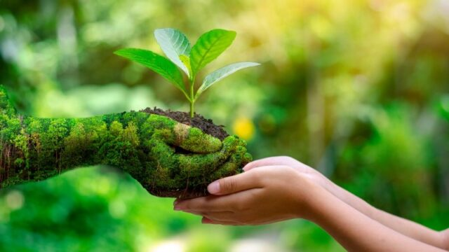
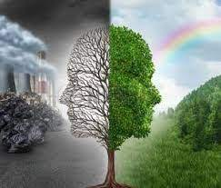
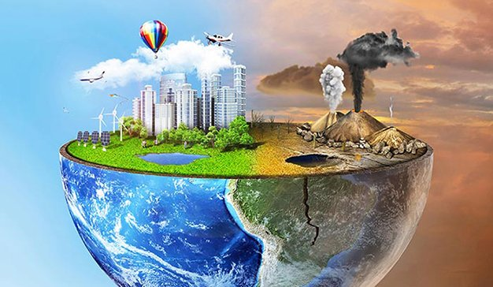
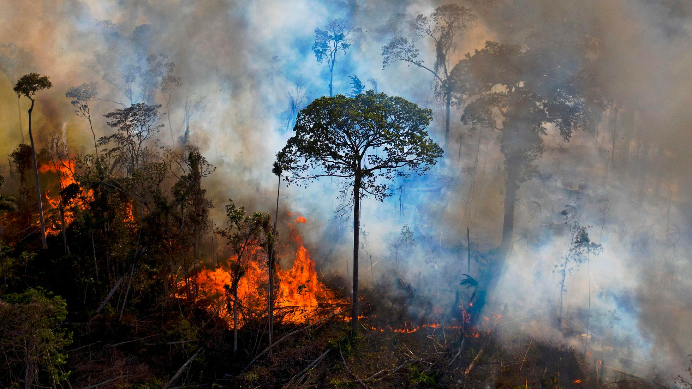
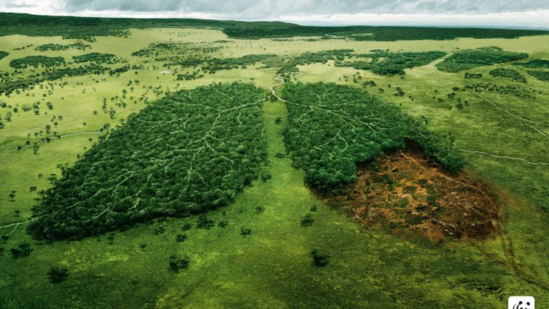
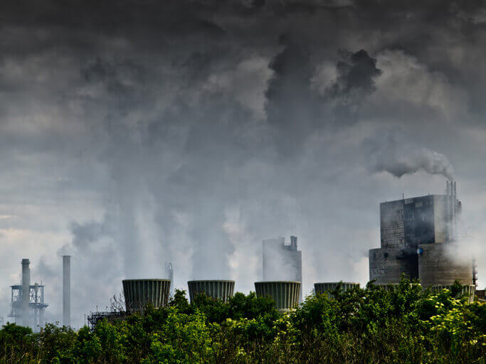
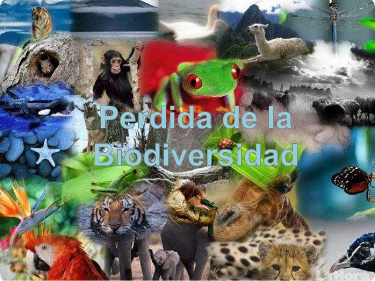
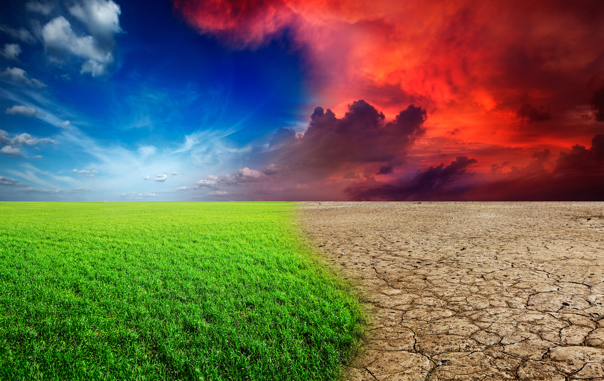
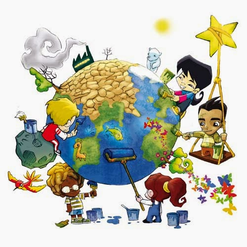

El medio ambiente es el espacio en el que se desarrolla la vida de los organismos y que permite su interacción. Está conformado por seres vivos (factores bióticos), por elementos sin vida (factores abióticos) y por elementos artificiales creados por el hombre.
Cuando se habla de factores bióticos se hace referencia a todos los seres vivos que viven en un ambiente (las bacterias microscópicas, los hongos, la flora, la fauna, los seres humanos) y las interacciones entre ellos; por su parte, los factores abióticos son aquellos que carecen de vida pero determinan el espacio físico del ambiente (como el aire, el suelo y el agua) y resultan esenciales para la subsistencia de los organismos vivos.
Entre los elementos artificiales se incluye a todos aquellos creados por el ser humano, como la urbanización, la cultura, las tradiciones. La suma de estos valores naturales, culturales y sociales en un momento histórico y en un lugar en particular constituyen el medio ambiente.
IMPORTANCIA DEL MEDIO AMBIENTE

Todos los organismos obtienen del medio ambiente todos los elementos que necesitan para vivir: desde el aire y el agua, hasta el refugio y el alimento que les permite crecer, desarrollarse y obtener energía. Mantener el equilibrio del medio ambiente es fundamental para mantener la vida en la Tierra tal como la conocemos.
Además, los seres humanos utilizan una gran cantidad de recursos naturales del medio para cubrir sus necesidades como vestimenta, alimento y objetos de uso cotidiano entre otros ejemplos. Por eso el ser humano debe conocer y cuidar sus interacciones con el medio ambiente para gestionar de manera sostenible los recursos naturales que permiten su crecimiento económico y su desarrollo.
La fauna y la flora son de vital importancia para el medio ambiente ya que poseen una interdependencia que posibilita el equilibrio de las especies y el desarrollo de la biodiversidad.
La supervivencia del hombre depende en gran medida de las interacciones y el uso consciente de la flora, la fauna y los recursos naturales, así como del desarrollo de las relaciones sociales, políticas y económicas que forman parte de su medio.
TRANSFORMACION DEL MEDIO AMBIENTE

Muchas de las transformaciones en el medio ambiente se dan de manera natural y no dependen del ser humano, por ejemplo, los cambios en el ecosistema que puede generar la erupción de un volcán o una inundación.
Sin embargo, la mayoría de los cambios en el medio ambiente se dan por la acción del hombre. El hombre es el organismo vivo que más interviene el medio: no solo crea el medio ambiente artificial, sino que explora, modifica y utiliza los recursos del medio ambiente natural para su supervivencia y bienestar.
Aunque algunas de las transformaciones introducidas por el hombre no tienen impactos negativos significativos en el ambiente natural, muchas otras traen aparejados daños irreversibles producto de la contaminación y la destrucción del medio.
El hombre ha ido modificado el medio ambiente natural mediante la urbanización, el uso desmedido de recursos naturales y la industrialización.
CONTAMINACIÓN DEL MEDIO AMBIENTE

La contaminación ambiental es definida como la presencia de agentes químicos, físicos o biológicos en el ambiente que pueden tener efectos nocivos sobre la seguridad y salud de los seres vivos. A medida que la población comenzó a crecer y aumentar su tecnología, el impacto del ser humano sobre el medio ambiente natural comenzó a ser mayor y más nocivo.
La contaminación comenzó a agravarse exponencialmente en la segunda mitad del siglo XVIII a partir de la Revolución Industrial, por la explotación de recursos minerales y fósiles. De esta manera, el equilibrio del sistema ambiental se perdió y para muchos seres vivos resultó incluso imposible adaptarse a estos grandes cambios.
✯Destrucción de los bosques:✯ Es producida por la tala indiscriminada de árboles que son esenciales para la supervivencia de los seres vivos. En la mayoría de los casos ocurre por la expansión de áreas urbanas, la expansión de zonas de industrias o para actividades de ganadería y agricultura.

✮Contaminación del agua:✮ Es producida, principalmente, por los desechos industriales y domésticos arrojados a ríos y mares.
✬Explotación de los recursos naturales:✬ Las actividades de la megaminería, que incluye la extracción de petróleo, generan desechos y ponen en riesgo a los ecosistemas.

✫Contaminación del aire:✫ La industria y los automóviles liberan gases que contribuyen al calentamiento global.

✧Disminución de la biodiversidad:✧ El impacto que la contaminación del aire y del agua produce en las diferentes especies de organismos vivos genera un desequilibrio en los ecosistemas, que lleva a la extinción de aquellas especies que no logran adaptarse a los cambios en el medio.

★Contaminación del suelo:★ El uso de pesticidas y los residuos plásticos, nucleares y no biodegradables produce una degradación de los suelos.

¿Cómo cuidar el medio ambiente?

Para evitar la destrucción del medio ambiente y la supervivencia de los seres vivos y el desarrollo humano, es necesario tomar los recaudos y las acciones necesarias. En primer lugar, se debe hacer un buen uso de los recursos naturales, no utilizarlos de manera indiscriminada, y fijar la atención en cuestiones como el cambio climático y la protección de la biodiversidad.
Para llevar adelante esta tarea de protección medioambiental es importante que todos los actores de la sociedad tomen conciencia y se involucren. Es necesario exigir a los Estados y gobernantes que promuevan el cuidado del medio ambiente y controlen el accionar de las industrias, empresas y de la comunidad científica.
También desde los hogares cada individuo puede tomar medidas frente al consumo y la producción, y también cambiar hábitos y rutinas hacia otras más sustentables como:
Utilizar de manera consciente el agua.
No arrojar residuos a la vía pública.
Reducir el uso de envoltorios plásticos.
Utilizar una bolsa de tela para las compras y así desalentar el uso de bolsas plásticas en los comercios.
Mantener los espacios verdes urbanos en condiciones.
Utilizar el transporte público o la bicicleta en lugar de automóviles o buses.
Informarse sobre empresas que busquen reducir el impacto ambiental en la producción de sus bienes y servicios, y consumirlos.
Utilizar la energía de manera consciente: apagar las luces, evitar mantener aparatos enchufados cuando no se están utilizando.
Separar los residuos domésticos.
Reutilizar los envases plásticos y de vidrio.
Fomentar estas acciones entre amigos y familiares.